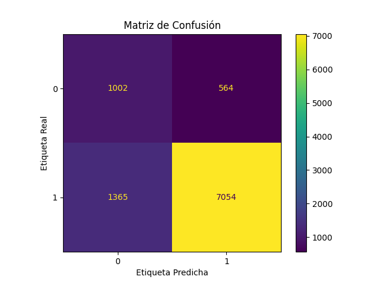
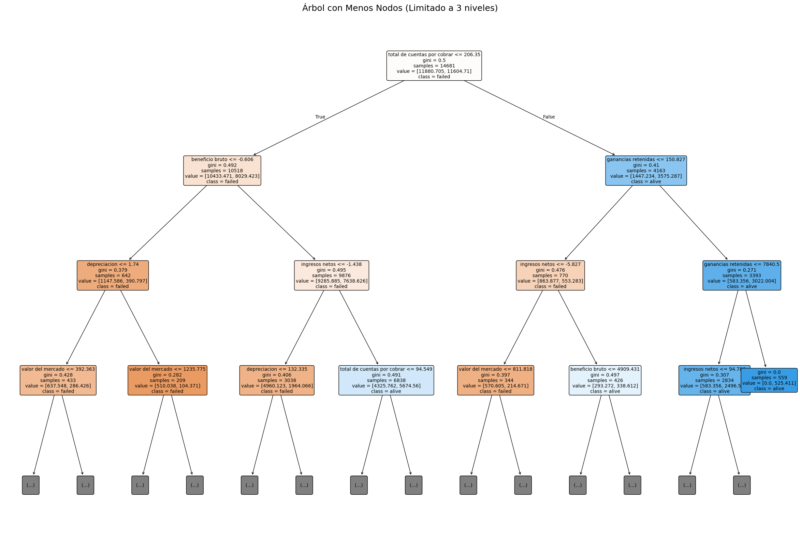

En este apartado se explicarán los conceptos relevantes empleados en el algoritmo de aprendizaje supervisado de machine learning conocido como Random Forest (Bosques aleatorios) que nos permite predecir si un negocio tendrá riesgo de quebrar o no. Este modelo fue entrenado con los datos de empresas que estaban en el stock market en el período de 1999 a 2018.
| Variable | Significado |
|---|---|
| Activos | Todos los recursos económicos (efectivo, propiedades, equipos, inversiones) que posee una empresa y que pueden convertirse en valor monetario. |
| Depreciación | Pérdida de valor de los activos fijos (maquinaria, edificios) debido al uso o obsolescencia. |
| Inventario | Valor de los productos o materias primas que la empresa tiene almacenados para su venta o producción. |
| Ingresos Netos | Beneficio o pérdida final después de deducir costos, gastos e impuestos. |
| Total de cuentas por cobrar | Dinero que los clientes deben a la empresa por ventas a crédito. |
| Valor del Mercado | Precio estimado de la empresa según la bolsa o valoración de mercado. |
| Deuda a Largo Plazo | Obligaciones financieras con vencimiento mayor a un año (préstamos, bonos). |
| Beneficio Bruto | Ganancia obtenida después de restar costos directos de producción. |
| Pasivos Corrientes Totales | Deudas y obligaciones que deben pagarse en menos de un año. |
| Ganancias Retenidas | Utilidades acumuladas que no se han repartido como dividendos. |
| Parámetro | Valor | Significado |
|---|---|---|
| {{ nombre }} | {{ valor }} | {% if nombre == 'criterion' %} Medida de calidad de división (gini/entropy) {% elif nombre == 'max_depth' %} Profundidad máxima del árbol {% elif nombre == 'min_samples_split' %} Mínimo de muestras para dividir un nodo {% elif nombre == 'min_samples_leaf' %} Mínimo de muestras en nodos hoja {% elif nombre == 'max_features' %} Número de features consideradas {% elif nombre == 'n_estimators' %} Número de árboles generados {% elif nombre == 'class_weight' %} Maneja las clases desbalanceadas {% elif nombre == 'random_state' %} Controla la aleatoriedad {% endif %} |
Estas fueron las métricas utilizadas para evaluar el modelo, MAE nos indica que el modelo es aceptable y los F1-Score nos indican para que clase es más aceptable
| Métrica | Valor | Significado |
|---|---|---|
| MAE | {{ metricas.MAE|round(3) }} | Error absoluto medio (cuánto se desvía en promedio la predicción) |
| F1-Score (Failed) | {{ metricas['F1-Score (Failed)']|round(3) }} | Balance entre precisión y recall para la clase "Failed" (empresas en riesgo) |
| F1-Score (Alive) | {{ metricas['F1-Score (Alive)']|round(3) }} | Balance entre precisión y recall para la clase "Alive" (empresas saludables) |
La matriz de confusión muestra el desempeño de un modelo comparando sus predicciones con valores reales. El modelo tiene tendencia a predecir acertadamente los negocios fuera de riesgo sobre aquellos negocios en riesgo.
Esta es una visualización de tres niveles de un árbol de decisión de los que se crearon para el RandomForest, con su criterio de separación gini y las variables con las cuales se evalua el árbol.
